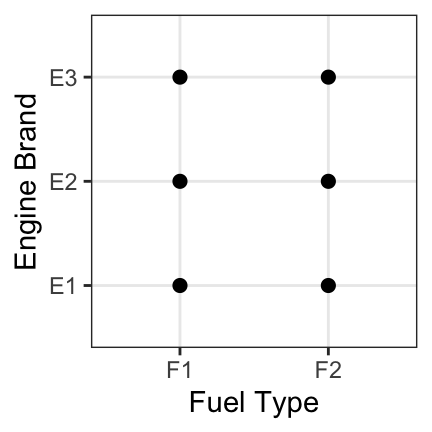
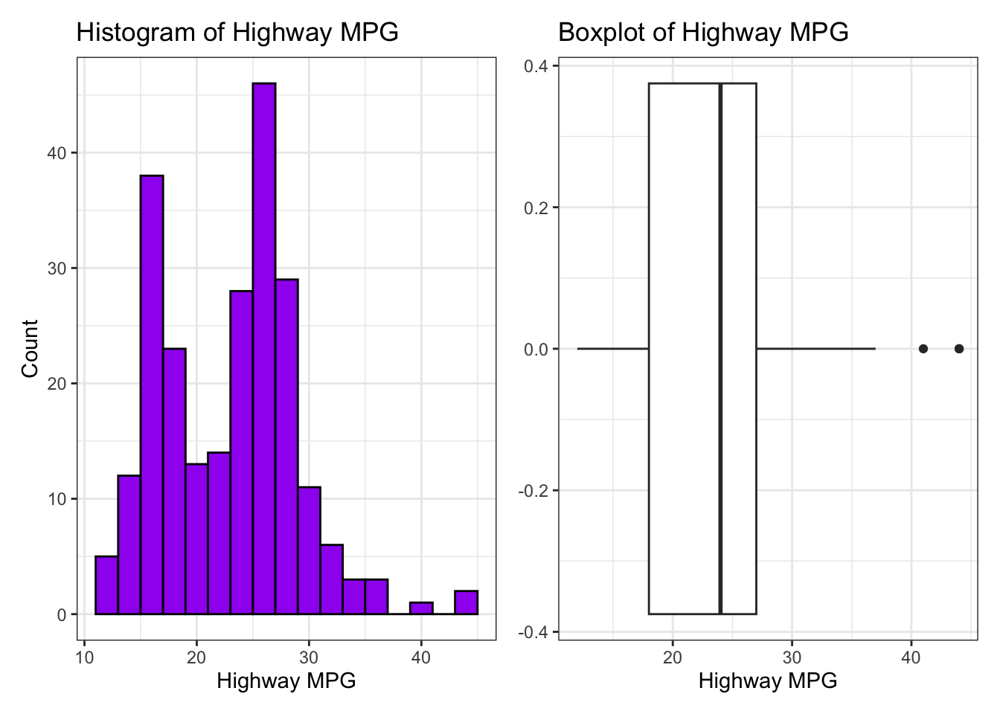
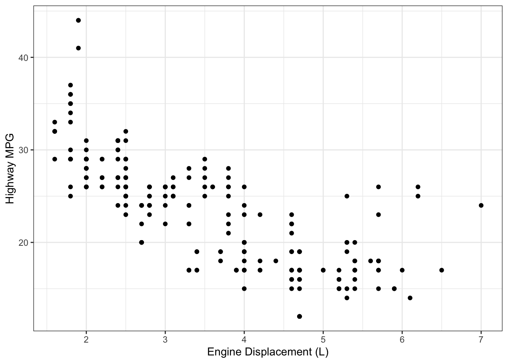
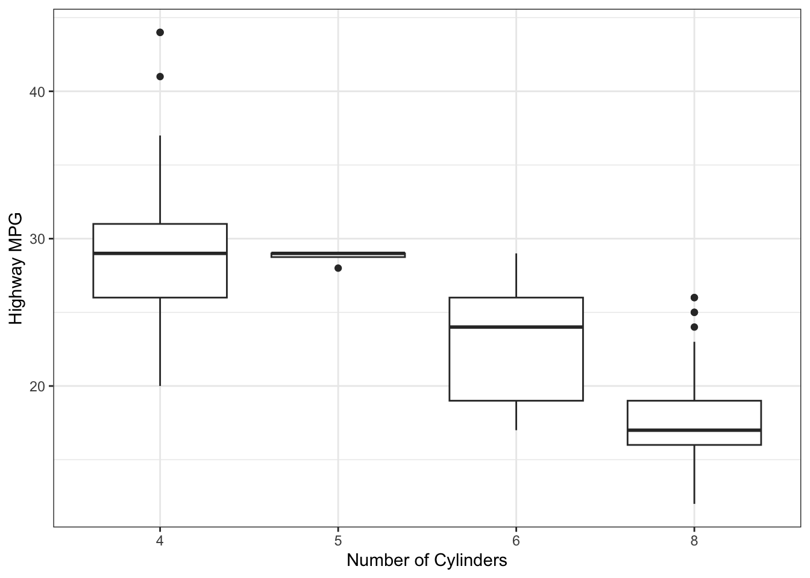
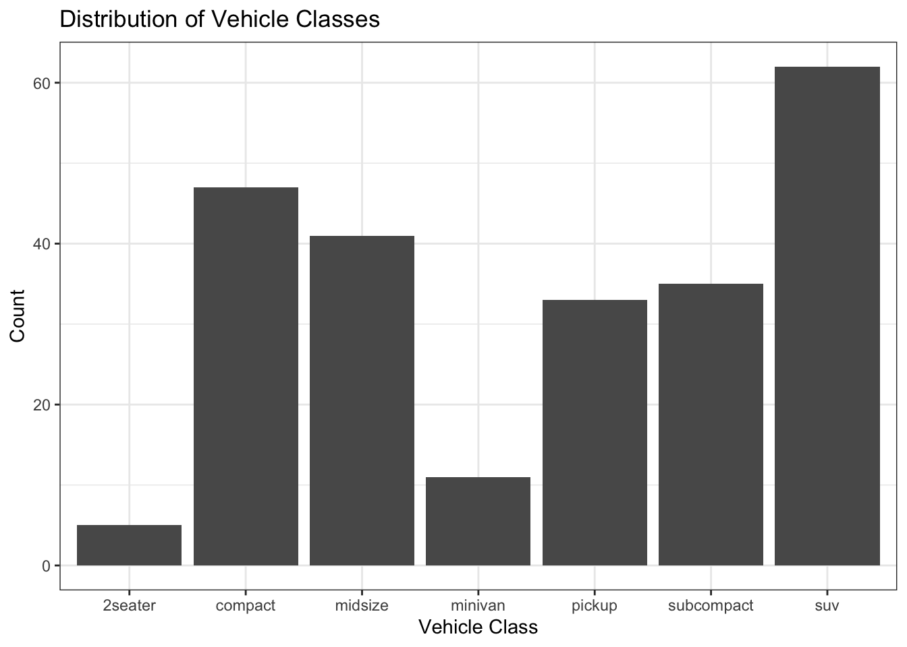
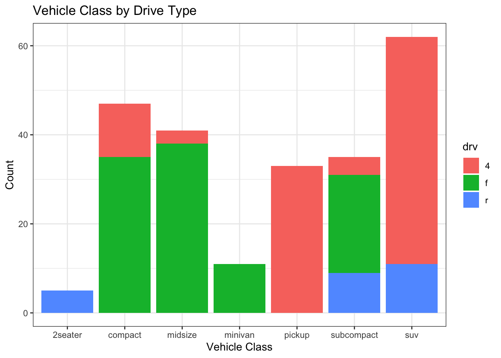
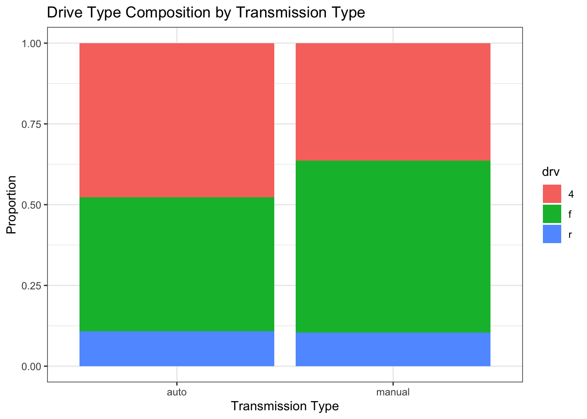
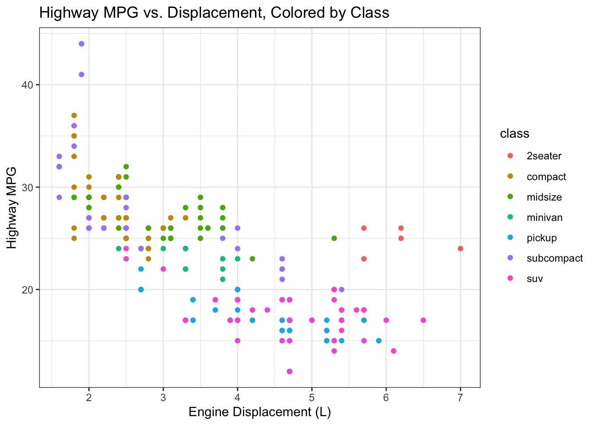
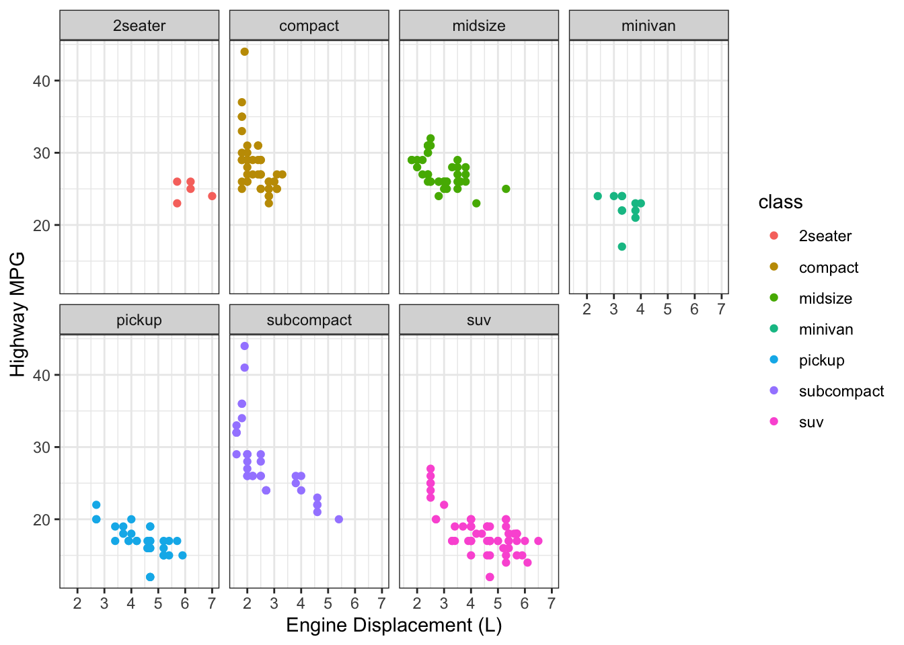

Topic 4: Data Visualization
About
This activity provides an introduction to data visualization — thinking carefully about which plot types are appropriate for different variable types, how to build them in a spreadsheet, and how to read and interpret what they show.
Before we jump in, it is worth calling out that data visualization is one place where spreadsheet tools really show their limits. Because plots are all produced by clicking a button, each button basically behaves as a specialized wizard which attempts to produce a reasonable plot given the user’s “inputs”. Often times, getting your intended plot requires editing how the data is being utilized in the default plot generated. This produce the wrong plot and then try to fix it approach can be quite frustrating.
Note. The button above resets multiple choice and checkbox questions. Currently, resetting answer entry cells must be done manually via hitting the Start Over button on each individual interactive cell.
Using a Spreadsheet Program
Throughout this activity you’ll be building charts inside your spreadsheet program using the mpg dataset. This data set includes information about a variety of vehicles and their fuel economy.
- If you are a Google Sheets user, click here to create a copy of the spreadsheet for this activity
- If you are an Excel user, click here to download a copy of the spreadsheet for this activity
Keep your spreadsheet open alongside this notebook as you work through the walkthroughs.
Data Visualization
Through this workbook you’ll learn techniques for data visualization. You’ll think about how the type of plot chosen impacts what information is conveyed (or lost). Choosing the wrong plot type can result in a useless plot (at best) or even a plot which is misleading. Think about the types (numerical, categorical) of variables you are working with and how they dictate which plot type should be utilized — for example, a scatterplot is not appropriate in every scenario!
Objectives
Workbook Objectives: After completing this workbook you should be able to:
- Read a plot, describe any interesting features, and accurately convey the story being told by the plot.
- Identify and utilize the most appropriate plot types for your scenario by considering the types of variables you are working with.
- Utilize color and fill to show additional dimensions of data in a plot, but also recognize that adding more information to a plot can negatively impact our ability to read the graphic.
- Use your knowledge of data visualization to generate informative plots which uncover a compelling (and truthful) story about the relationships that exist between variables.
Choosing the Right Plot
Choosing an appropriate plot is extremely important in data visualization. Some plots don’t make sense for certain variable types. For example, a scatterplot in the case of two-categorical predictors is quite a silly choice – the only thing this plot tells us is that every combination of fuel type and engine brand exists in our dataset. We have no idea which combinations are most or least popular.

The following are recommended basic plot types for common scenarios:
- A single numerical variable: a histogram or boxplot
- A single categorical variable: a bar chart
- Numerical versus numerical: a scatterplot
- Numerical versus categorical: side-by-side boxplots
- Categorical versus categorical: a stacked bar chart or a 100% stacked bar chart
Check Your Understanding: A Better Plot
Which of the following plot types would have been a better choice to display the engine brand and fuel type data? Select all that apply.
Getting Started: Exploring the Data
Throughout this workbook we will explore fuel efficiencies of multiple classes of vehicles using the mpg dataset. Open your spreadsheet now and take a few minutes to explore the data. The spreadsheet contains just a single tab containing all of the data, labeled mpg. Use it to familiarize yourself with what is available.
A limited data dictionary (a listing of the column names and their explanations) appears below.
| Variable | Description |
|---|---|
manufacturer |
Vehicle manufacturer |
model |
Model name |
displ |
Engine displacement in litres (a measure of engine size) |
year |
Year of manufacture |
cyl |
Number of cylinders |
trans |
Transmission type (detail level) |
drv |
Drive type: f = front-wheel, r = rear-wheel, 4 = four-wheel |
cty |
City fuel economy (miles per gallon) |
hwy |
Highway fuel economy (miles per gallon) |
fl |
Fuel type |
class |
Vehicle class (e.g. compact, SUV, pickup) |
trans2 |
Automatic or manual transmission indicator |
Use the table above, and your exploration of the dataset, to answer the following questions.
Check Your Understanding: Variables
How many variables are contained in the mpg dataset?
Check Your Understanding: Observations
How many observations (records) are contained in the mpg dataset?
Check Your Understanding: Numerical Variables
Which of the variables is numerical? Select all that apply.
Histograms and Boxplots: A Single Numerical Variable
Before exploring relationships between variables, it is useful to understand the distribution of a single numerical variable on its own. Two plots are especially well suited for this: the histogram and the boxplot.
A histogram divides the range of a numerical variable into equal-width intervals (called bins) and draws a bar for each bin whose height reflects how many observations fall into that bin. Histograms are excellent for showing the overall shape of a distribution — whether it is symmetric or skewed, unimodal or bimodal, and whether there are gaps or unusual concentrations of values.
A boxplot summarizes a distribution using five key values: the minimum, \(Q_1\) (the first quartile), the median, \(Q_3\) (the third quartile), and the maximum. Any observations that extend more than 1.5 times the IQR beyond \(Q_1\) or \(Q_3\) are shown as individual dots and flagged as potential outliers. Boxplots are more compact than histograms and make it easy to read off the median and IQR at a glance, but they hide the detailed shape that a histogram reveals.
The plots below show the distribution of highway fuel economy (hwy) for the vehicles in the mpg dataset, first as a histogram and then as a boxplot.

Check Your Understanding: Reading a Histogram
Based on the histogram above, which of the following best describes the distribution of highway fuel economy?
Try It! Build a histogram of city fuel economy (cty) in your spreadsheet.
Creating a Histogram
In Google Sheets:
- Click the column header for
ctyto select the entire column. - Go to Insert → Chart.
- In the Chart Editor, change the Chart type to Histogram chart.
- Under the Customize tab, use the Histogram section to adjust the bucket (bin) size if desired.
- Add a title and axis labels using the Customize tab.
In Excel:
Click the column header for
ctyto select the entire column.Go to Insert → Charts → Insert Statistic Chart → Histogram.
- Note that the icon for the Statistics Chart looks like a histogram.
Right-click (Windows) or
ctrl+click (Mac) on the bars of the histogram and choose Format Data Series to adjust the bin width under Bin width or Number of bins, if desired.Add a title and axis labels via Chart Design → Add Chart Element.
Try It! Now build a boxplot of cty in your spreadsheet.
Creating a Boxplot for a Single Variable
In Google Sheets: Sheets does not have native boxplot functionality and requires the construction of a boxplot through its candle-stick plot functionality. Boxplots in Google Sheets are omitted from this activity, but there are some good tutorials for constructing them on YouTube.
In Excel:
- Click the column header for
hwyto select the entire column. - Go to Insert → Charts → Insert Statistic Chart → Box and Whisker.
- Add a title and axis label via Chart Design → Add Chart Element.
Scatterplots: Two Numerical Variables
A scatterplot is the standard choice when you want to explore the relationship between two numerical variables. Each observation becomes a point, with one variable on the x-axis and the other on the y-axis.
The plot below shows highway miles per gallon (hwy) plotted against engine displacement (displ).

Use the plot above to answer the following questions.
Check Your Understanding: Reading a Plot I
Which of the following is true?
Check Your Understanding: Reading a Plot II
Describe the relationship between highway miles per gallon and engine displacement.
Check Your Understanding: Reading a Plot III
Which is the best practical interpretation of the plot?
Try It! Now build a scatterplot of your own. Using your spreadsheet, create a scatterplot of city miles per gallon (cty) on the y-axis against engine displacement (displ) on the x-axis.
Creating a Scatterplot
In Google Sheets:
- Select the two columns you want to plot. To select non-adjacent columns (like
displin column C andctyin column H), hold Ctrl (Windows) or Cmd (Mac) while clicking the second column header. - Go to Insert → Chart.
- In the Chart Editor, under Chart type, select Scatter chart.
- Under X-axis, confirm
displis selected. Under Series, confirmctyis selected. If not, use the dropdowns to correct them.- If any extra Series columns are selected, use the triple-dot icon to Remove them from the plot.
- Click the chart title to add a descriptive title, and use the Customize tab to add axis labels.
In Excel:
- Select the
displcolumn first (this will become the x-axis). Then hold Ctrl and select thectycolumn. - Go to Insert → Charts → Scatter and choose the first option (Scatter with only Markers).
- Right-click the chart and choose Select Data to verify which series is on which axis. If the axes are swapped, use Switch Row/Column or reassign the series.
- Use Chart Design → Add Chart Element to add a title and axis labels.
Check Your Understanding: City vs. Displacement
Based on the scatterplot you just built, which of the following best describes the relationship between engine displacement and city fuel economy?
Try It! Build another scatterplot, but this time use the number of cylinders (cyl) along the \(x\)-axis and the highway gas mileage (hwy) along the \(y\)-axis.
Notice that this plot isn’t very useful because the cylinders variable takes on very few levels. We may be better off treating cyl as if it were a categorical variable here, which leads us naturally to the next plot type.
Boxplots: Numerical vs. Categorical
When you want to compare the distribution of a numerical variable across the levels of a categorical variable, a set of side-by-side boxplots is usually the best choice. Each box summarizes one group, showing the median, IQR, and any outliers.
Below is a set of side-by-side boxplots showing highway fuel economy (hwy) broken out by number of cylinders (cyl). Even though cyl is stored as a number, it behaves more like a category here since it only takes the values 4, 5, 6, and 8.

Check Your Understanding: Reading Boxplots
Based on the boxplots above, which number of cylinders is associated with the highest median highway fuel economy?
Try It! Now try building a set of side-by-side boxplots in your spreadsheet showing the distribution of hwy for each cylinder group if you’d like. Doing so is possible in both Google Sheets and Excel, but the process can be complex. The instructions for Excel are listed below and a general strategy for Google Sheets is listed, but the details are omitted.
Creating Side-by-Side Boxplots
In Google Sheets: Building boxplots is possible, but you’ll need to calculate the minimum, Q1 (first quartile), median, Q3 (third quartile), and maximum for each group prior to building the boxplots. Due to the complexity, boxplots in Google Sheets are omitted here.
In Excel:
- Select the
cylcolumn and thehwycolumn. - Go to Insert → Charts → Insert Statistic Chart → Box and Whisker. Note that the icon for the “Statistical Chart” grouping may look like a histogram.
- Use the Select Data button to edit the data sources used for the chart.
- Under Legend entries (Series), select
cyland use the minus icon (-) to remove that column. - In the Horizontal (Category) axis labels section, choose the range corresponding to the cylinder values (
=mpg!$E$2:$E$235) and click OK.
- Under Legend entries (Series), select
- Right-click the chart to add axis titles and a chart title via Add Chart Element.
Note: Neither of these pathways are particularly easy. Focus instead on reading and interpreting the boxplot shown in the notebook above — the conceptual takeaways are what matter most here.
Bar Charts: A Single Categorical Variable
A bar chart displays the frequency (or relative frequency) of each level of a categorical variable. The height of each bar shows how many observations fall into that category.
Consider the vehicle classes in the mpg dataset. The bar chart below shows how many vehicles of each class appear in the data.

Try It! Now build this bar chart in your spreadsheet. Starting this requires the construction of a pivot table, a tool you first encountered in the Topic 3 notebook.
Creating a Bar Chart from a Pivot Table
In Google Sheets:
- Click anywhere in your data and go to Insert → Pivot table.
- Add
classto Rows and addclassto Values (summarize byCOUNTA). - Highlight the cells corresponding to the classes and their counts, then go to Insert → Chart.
- Google Sheets should default to a bar or column chart. If not, change the Chart type to Column chart in the Chart Editor.
- Add a title and axis labels using the Customize tab.
In Excel:
- Click anywhere in your data and go to Insert → PivotTable.
- Drag
classto Rows and dragclassto Values (it will count automatically). - Click anywhere in the pivot table, then go to PivotTable Analyze → PivotChart.
- Choose Column and click OK.
- Add a title and axis labels via Chart Design → Add Chart Element.
Stacked Bar Charts: Two Categorical Variables
When you have two categorical variables, a stacked bar chart lets you see both the total count for each level of one variable and the composition of those totals by the levels of the second variable.
Consider vehicle class and drive type (drv). Neither variable is numerical, so a scatterplot would be inappropriate here.
Check Your Understanding: Appropriate Plot Types I
Why would a scatterplot not be an appropriate visual to use with class and drv?
Check Your Understanding: Appropriate Plot Types II
Which of the following plot types would be appropriate for visualizing class and drv together? Select all that apply.
The stacked bar chart below shows vehicle class on the x-axis, with each bar filled by drive type (drv).

Try It! Now build this chart in your spreadsheet. The approach is very similar to the way we constructed a simple bar chart above.
Creating a Stacked Bar Chart
In Google Sheets:
- Create a pivot table with
classin Rows anddrvin Columns, andclassin Values summarized byCOUNTA. This produces a cross-tabulation showing the count of each class × drive type combination. - Highlight the range containing the class types (row labels), drive type labels (column labels), and calculated counts. Then choose Insert → Chart.
- If Stacked column chart is not already selected as the Chart type, use the dropdown menu to choose it.
- Use the Customize menu to add a title and axis labels.
In Excel:
- Create a PivotTable with
classin Rows,drvin Columns, andclassin Values (set toCountA). - Click anywhere in the PivotTable, then go to PivotTable Analyze → PivotChart.
- Choose Bar or Column, then select the Stacked subtype. Click OK.
- Add a title and axis labels.
Check Your Understanding: Reading a Stacked Bar Chart
Based on the stacked bar chart above, which vehicle class appears to be most exclusively four-wheel drive (4)?
Try It! Create another stacked bar chart comparing the transmission type as automatic or manual (trans2) on the \(x\)-axis and using the drive type (drv) as the secondary variable.
A Note on the Transmission Variable
The original trans column in the mpg dataset contains detailed transmission codes like auto(l5) and manual(m6). If you’re interested in how I constructed the trans2 variable, you can click into cell L1 to view the formula I used.
Notice that this stacked bar plot shows us that there are approximately twice as many automatic vehicles in the dataset as there are manual vehicles. It is more difficult to compare the drive types across the groups though.
100% Stacked Bar Charts
A stacked bar chart shows raw counts, which makes it easy to see how many vehicles fall into each category overall. But it can be hard to compare the proportions of drive types across vehicle classes when the bar heights differ. A 100% stacked bar chart rescales every bar to the same height, making proportional comparisons much easier — at the cost of losing information about the total counts.
The plot below uses a 100% stacked bar to show the distribution of transmission type (simplified to manual vs. automatic) broken out by drive type.

Try It! Reproduce this plot in your spreadsheet environment.
100% Stacked Bar Plots
Follow the steps below to convert your stacked bar plot into a 100% stacked bar plot.
Google Sheets:
- Click on the stacked bar plot you created.
- Use the triple-dot icon in the top-right corner of the plot to access the Edit Chart menu.
- Use the Stacking dropdown menu to choose 100%.
- Update your title and axis labels.
Excel:
- Right click (Windows) or
ctrl+click (Mac) the stacked barplot you created. - Go to Change chart type → Column → 100% Stacked Column.
- Update your title and axis labels.
Check Your Understanding: Reading a 100% Stacked Bar Chart
Based on the 100% stacked bar chart you created (or the one above), which of the following statements is best supported?
Adding a Third Variable with Color
One powerful feature of scatterplots is the ability to encode a third variable using point color. The plot below revisits the hwy vs. displ scatterplot, this time coloring each point by vehicle class. This reveals that the group of high-displacement, low-efficiency vehicles sitting in the lower right of the plot is dominated by two-seater sports cars — an interesting finding.

Adding color works well here because there are a manageable number of vehicle classes and the groups are reasonably separable. As a general rule: the more categories you have, the harder a colored scatterplot becomes to read.
Adding Color to a Scatterplot
In Google Sheets:
Google Sheets does not natively support coloring scatterplot points by a categorical variable in a single step. The most practical workaround is to split the data into separate ranges by class. This means you’ll have the data organized into a pair of columns per class and then add each as a separate Series in the chart. This is tedious for seven classes but can work well for two or three groups.
- In a blank area of your sheet, create a separate column for
displandhwyfor each vehicle class usingFILTER(). For example,=FILTER(displ_range, class_range="compact")extracts the displacement values for compact vehicles. - Insert a Scatter chart and add each class as a separate series.
- Use the Customize → Series tab to assign a distinct color to each series.
In Excel:
Excel also requires a workaround for this. The simplest approach is:
- Sort your data by
class. - Create a scatter chart and then use Select Data → Add to add each class as a separate series, specifying the corresponding
displandhwyranges for each. - Format each series with a distinct color.
Note: For both tools, coloring by a categorical variable in a scatterplot is more involved than it would be in a dedicated statistics package. If you find the multi-series approach too cumbersome for seven classes, focus on reading and interpreting the plot shown above. Being able to interpret these types of plots is more important than being able to construct them at this stage.
Small Multiples: Viewing One Group at a Time
One way to reduce clutter in a colored scatterplot is to split the data into separate panels — one per category — rather than overlaying everything in a single chart. In data visualization this is called small multiples or faceting. The idea is that seven simple, readable plots can communicate more clearly than one complex one.

In a spreadsheet program, you can achieve something similar by filtering the data to one class at a time and creating a separate chart for each group, then arranging them side by side. For datasets with many categories this is quite time-consuming, and it is one of the clearest illustrations of where a dedicated statistics tool has a significant practical advantage over a spreadsheet.
Submit
If you are part of a course with an instructor who is grading your work on these activities, please copy and submit your question hash below using the method your instructor has requested.
Question Hash
The hash below encodes your responses to the multiple choice and checkbox questions in this activity.
Exercise Hash
Since there were no code cell exercises in this activity, there is no exercise hash to generate.
Summary
Main Takeaways
- Variable types dictate plot types. Always consider whether your variables are numerical or categorical before choosing a plot:
- Single numerical variable → histogram or boxplot
- Single categorical variable → bar chart
- Two numerical variables → scatterplot
- Numerical vs. categorical → side-by-side boxplots
- Two categorical variables → stacked bar chart or 100% stacked bar chart
- Histograms reveal the shape of a distribution; boxplots highlight the median, IQR, and outliers. Both are useful for a single numerical variable and complement each other well.
- Stacked bar charts show raw counts for two categorical variables simultaneously; 100% stacked bar charts rescale to proportions, making within-group comparisons easier but hiding total counts.
- Adding color to a scatterplot can encode a third variable, but more categories make the plot harder to read. Small multiples (one panel per category) are often a clearer alternative.
- A well-labeled chart — with a descriptive title and clear axis labels — communicates far more effectively than an unlabeled one. Always label your charts.
Looking Ahead
This activity concludes our foundational work on data exploration and visualization. Over the next several workbooks, we’ll transition to probability and working with probability distributions. We’ll start with basic, counting-based probability before moving to the binomial distribution and the normal distribution.
References
[1] Wickham, H., & Grolemund, G. (2017). R for data science: Import, tidy, transform, visualize, and model data. O’Reilly Media.
[2] Wickham, H. (2016). ggplot2: Elegant Graphics for Data Analysis. Springer-Verlag New York. [dataset]. https://ggplot2.tidyverse.org/reference/mpg.html